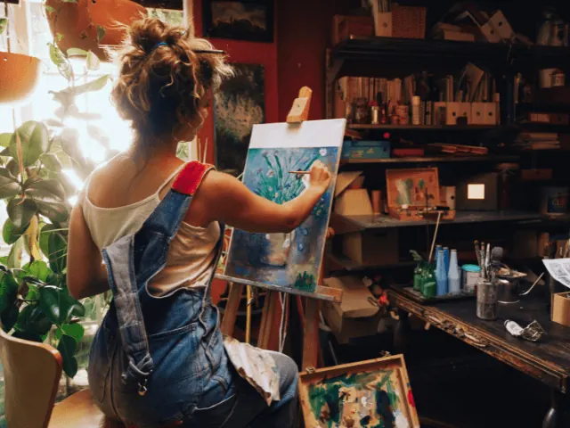

Partnerbijdrage
Doe eens gek en laat je op je bruiloft portretteren door een schilder
Gepubliceerd op 31 maart 2023, bijgewerkt op 26 februari 2024
Onderdeel van de gids Trouwen in Nijmegen

Je bruiloft is een van de meest speciale momenten in je leven en je wilt er zeker van zijn dat het onvergetelijk wordt. Een leuke en unieke manier om deze dag vast te leggen, is door jezelf te laten portretteren door een schilder. Hoewel het misschien wat vreemd lijkt om een schilder uit te nodigen op je bruiloft, kan dit prachtige resultaten opleveren.
Waarom kiezen voor een schilder?
Een schilder kan een unieke draai geven aan de traditionele trouwfoto’s. In plaats van een standaard foto van het bruidspaar, kan een schilder een kunstwerk maken dat de sfeer en emoties van de dag vastlegt. Dit kan een prachtige aanvulling zijn op de foto’s die je hebt laten maken.
Een schilder kan ook een andere kijk hebben op de dag dan een fotograaf. Ze kunnen momenten vastleggen die een fotograaf misschien zou missen, of de sfeer van de dag op een andere manier vastleggen.
Hoe werkt het inhuren van een schilder op je bruiloft?
Als je hebt besloten om een schilder in te huren voor je bruiloft, is het belangrijk om tijdig contact op te nemen. De schilder kan zich hierdoor beter voorbereiden en eventueel een schets maken van het kunstwerk dat hij of zij gaat maken. Op de dag van de bruiloft zal de schilder waarschijnlijk rondlopen en verschillende momenten vastleggen op het doek. Afhankelijk van de snelheid en grootte van het kunstwerk, kan dit een aantal dagen of weken duren voordat het klaar is. Het kan een geweldige manier zijn om herinneringen aan je bruiloft te bewaren en eeuwig vast te leggen in prachtig kunstwerk!
Wat zijn de kosten en opties, bij het kiezen van een schilder?
De kosten voor een schilder op je bruiloft kunnen variëren, afhankelijk van de schilder en de grootte van het schilderij. Het kan daarom verstandig zijn om van tevoren een budget te bepalen en verschillende opties te onderzoeken. Er zijn ook schilders die een live painting sessie aanbieden waarbij ze ter plekke een schilderij maken. Dit kan een leuke manier zijn om de gasten bij het proces te betrekken en kan voor een leuke ervaring zorgen.

Welke kunstenaars uit Nijmegen kun je inhuren voor jouw bruiloft?
We hebben een aantal goede opties van kunstschilders voor je op een rijtje gezet:
Rob Jacobs: Naast zijn ervaring als figuratief kunstschilder en zijn expertise in diverse schildertechnieken, biedt Rob Jacobs ook een unieke service aan voor bruiloften: live painting. Met live painting maakt Rob op een creatieve en interactieve manier een schilderij tijdens de bruiloft, waarbij de gasten kunnen meekijken naar het ontstaan van het kunstwerk. Rob is zeer flexibel en kan zich aanpassen aan de wensen van het bruidspaar en de locatie.
- Peggy van Gurp: Laat je trouwfeest tot leven komen in een werk van Peggy. Binnen vijf uur staat er een uniek werk voor je klaar, van jouw grote dag. Ze krijgt zeker 10 gasten herkenbaar op het doek, dus wie passen er het beste bij jouw perfecte plaatje?
- Susan Mertens: Susan Mertens is een getalenteerde kunstenaar die met haar Live Paints een bijzondere en unieke manier biedt om jullie trouwdag vast te leggen. Haar werk is realistisch tot licht impressionistisch en kenmerkt zich door frisse kleuren en levendigheid. Wat Susan Mertens’ aanpak onderscheidt, is dat jullie niet lang hoeven te poseren voor haar schilderijen. In plaats daarvan bespreekt ze vooraf jullie wensen en maakt ze tijdens de bruiloft foto’s om later een compositie op doek te schilderen.
Het is verstandig om van tevoren verschillende opties te onderzoeken en te kijken welke schilder het beste bij jouw wensen past. Het kan ook nuttig zijn om referenties en portfolio’s te bekijken om te zien welke stijl het beste past bij jouw smaak en de stijl van je bruiloft.
Conclusie:
Een schilder op je bruiloft kan een geweldige manier zijn om je dag vast te leggen en een uniek kunstwerk te hebben als aandenken. Het kan even wennen zijn om een schilder uit te nodigen op je bruiloft, maar het kan een prachtig resultaat opleveren en een extra dimensie toevoegen aan de herinneringen aan je bijzondere dag.